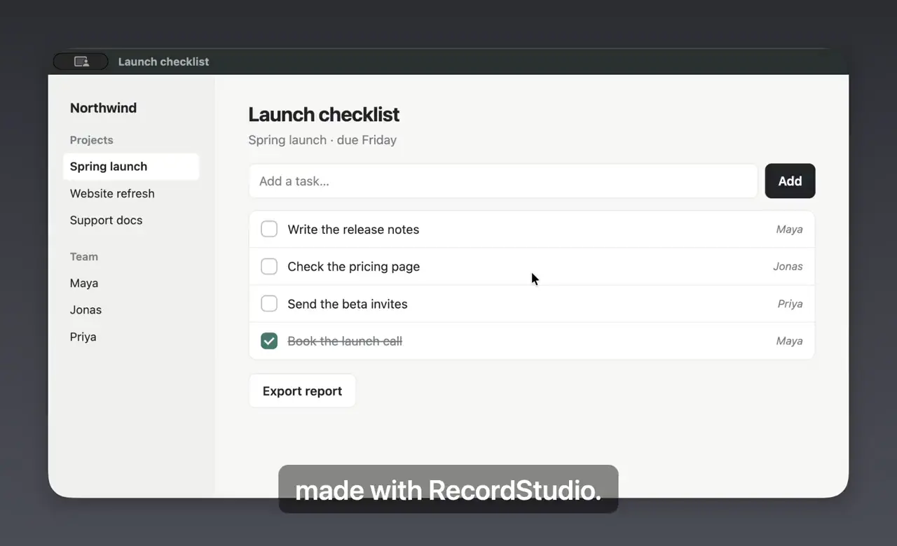
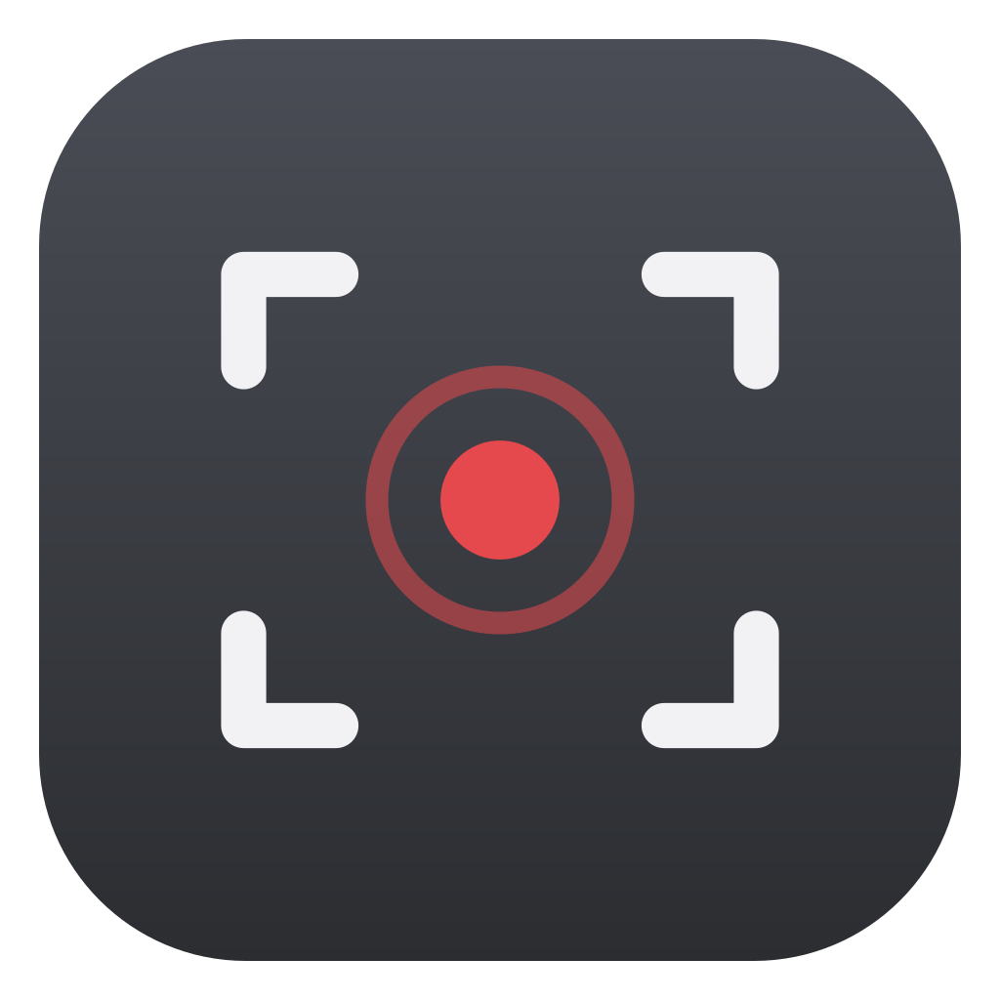
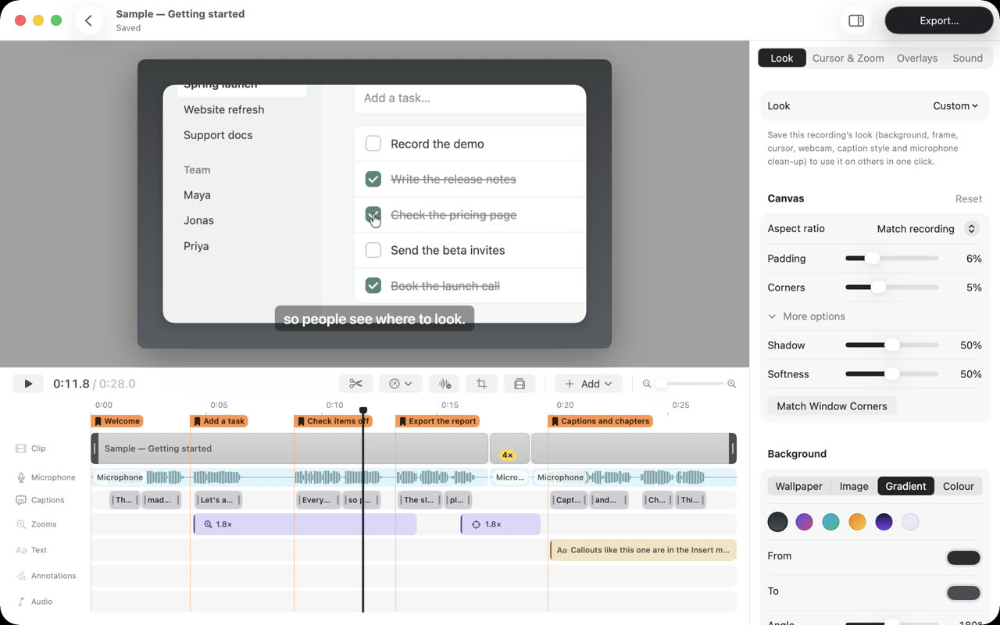
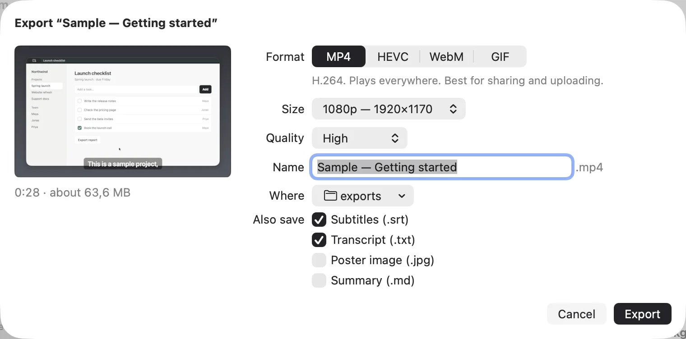

Record the way you already work.
Pick a screen, a window or an area, then press Record. Talk over it, put your face in a corner, or read your notes from a teleprompter that viewers never see. ⌃⌥⌘R starts a recording from any app.


RecordStudioRecord what you do on your Mac. RecordStudio zooms in where you click, frames the video and writes the captions, so your walkthrough is ready to share a few minutes after you stop recording.
Free · macOS 26 or later · Apple silicon and Intel

The editor, with the sample project that comes with the app.
How it works
You do the demo once. The editing that usually takes an evening is done before you open the editor.
Pick a screen, a window or an area, then press Record. Talk over it, put your face in a corner, or read your notes from a teleprompter that viewers never see. ⌃⌥⌘R starts a recording from any app.

Every click becomes a smooth zoom toward it, and the camera eases back out when you move on. A wide screen squeezed onto a phone stays readable, because the part that matters fills the frame.
Trim the start, play the slow part four times faster, and add captions written from what you said, on your Mac. Chapters mark each step. The original recording is never changed, so you can always go back.
MP4 for chat and the web, HEVC when size matters, WebM, or a GIF for a pull request. Subtitles, a transcript and a poster image can come with it. Press ⌘E and pick a format.

Privacy
Screen recordings show your mail, your code and your customers. RecordStudio keeps them in your Movies folder and nowhere else.
Recordings, edits and exports live in ~/Movies/RecordStudio. Time Machine backs them up with everything else.
Open the app and record. There is nothing to sign up for and nothing to sign in to.
The app sends nothing about you or what you do. The one thing it asks the internet is whether a new version is out.
Speech recognition runs on the Mac itself, so your voice is never uploaded to make a transcript.
Install
Get the latest RecordStudio.dmg from GitHub releases.
Open the disk image. In the window that appears, drop RecordStudio on the Applications folder framed on the right.
A short Welcome window asks for the permissions it needs, one at a time, and says what each is for.
Source
RecordStudio is written in Swift with Apple’s frameworks and nothing else. Read how it works, report a bug, or build your own copy.
# macOS 26 and Xcode 26 (or its Command Line Tools)
git clone https://github.com/kasapovicc/RecordStudio.git
cd RecordStudio
make run # build, sign and open the app
make test # run the testsNo packages are downloaded. WebM export also needs brew install ffmpeg.
Free · macOS 26 or later · Apple silicon and Intel